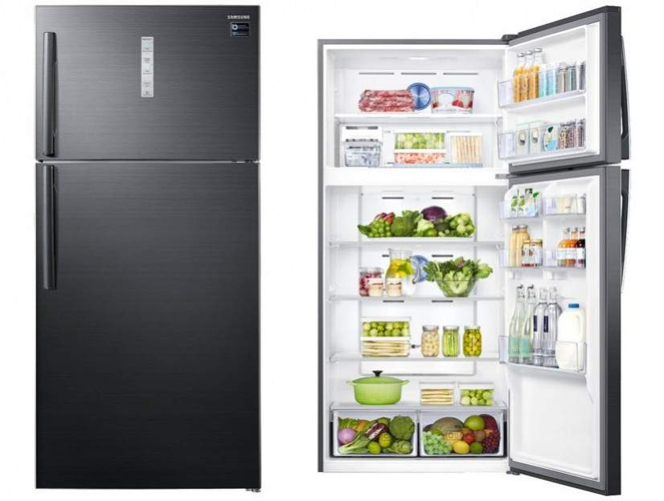
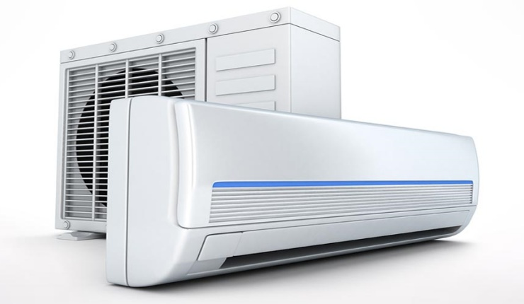
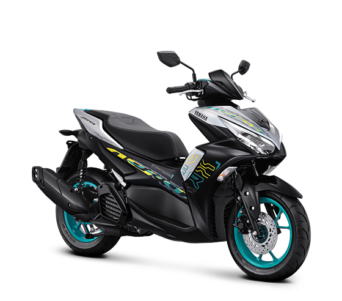
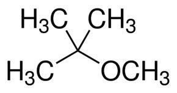
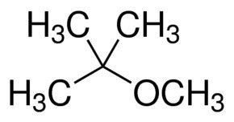
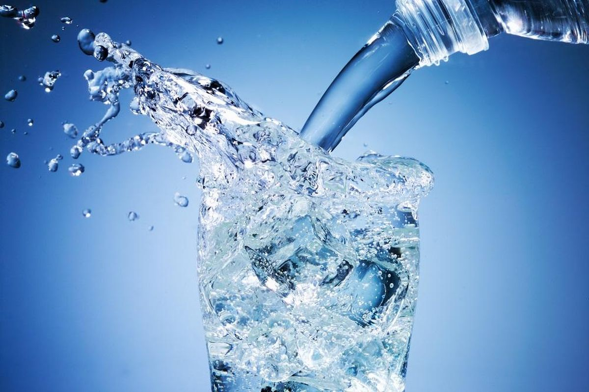
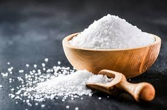
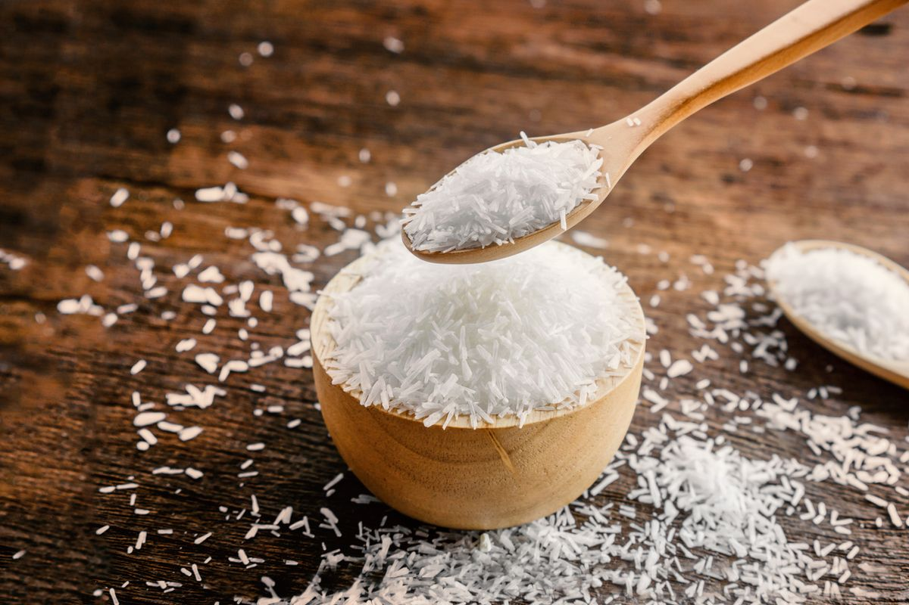
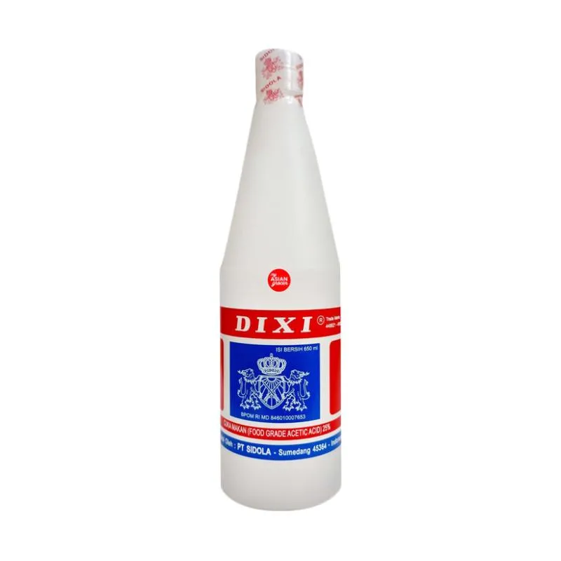

Kimia Hijau merupakan pendekatan dalam kimia yang berhubungan dengan bagaimana mendesain produk kimia dan prosesnya untuk mengurangi atau menghilangkan bahan-bahan kimia berbahaya
untuk mencegah bahaya bahaya yang dihasilkan dari produk kimia
Prinsip kimia hijau pertama kali dicetuskan oleh Paul Anantas pada tahun 1998 bersama John Warner
Penggantian klorofluorokarbon(CFC berbahaya, dapat membuat lapisan ozon menipis-suhu bumi meningkat) dengan hidroklorofluorokarbon dan hidrofluorokarbon yang lebih aman
 Penggantian tetra etil lead (TEL) dengan metil tersier buril eter (MTBE)
 

Kimia adalah ilmu yang mempelajari tentang materi(Zat-Memiliki massa dan ruang) dan perubahannya
Aspek dari materi adalah Komposisi, Struktur, dan sifat
Contoh materi Air:
komposisi - H2O
Struktur - 
sifat - polar
aspek dari Perubahan adalah waktu dan energi
Kembang api meledak dengan cepat
besi ketika bereaksi dengan oksigen akan berkarat
Ketika Kembang api meledak, ada melibatkan energi
Contoh bahan kimia:
   
Contoh peristiwa Kimia
 KUREAL
KUREAL